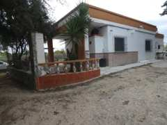
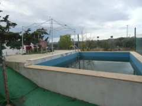

65€180,000#1
4,432 m² land · 5 bed · 3 bath · 5 min · Javalí Nuevo (Distrito Pedanías Oeste. M
Deal 1.5 · Growth 7.2 · Neighbours 3.3 · Retreat 4.7 · Pool
65€180,000#1
4,432 m² land · 5 bed · 3 bath · 5 min · Javalí Nuevo (Distrito Pedanías Oeste. M
Deal 1.5 · Growth 7.2 · Neighbours 3.3 · Retreat 4.7 · Pool

GOOD: Check photos and call · paperwork normal
- Price
- €180,000
- Plot
- 4,432 m²
- House
- 246 m²
- Bedrooms
- 5
- Bathrooms
- 3
- To school
- 5 min · 3 km
- Pool
- Yes
- Market value
- €172,000 (5 % above)
- Fair offer
- €158,000
- Area income
- percentile 78 in Spain
- Buildings 300 m
- 186
- Area
- Javalí Nuevo (Distrito Pedanías Oeste. Murcia Capital)
- Source
- pisos.com
- Annexes: check in the land registry (nota simple) and Catastro that they are registered